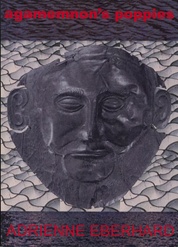

|
Agamemnon's Poppies: Adrienne Eberhard |
||||
 |

the emergence of a truly substantial poetic talent poetry of vigour and originality Book Description Honey
pools on my spoon,
rolls of redness, sticky as the sun; for a moment, beehive tombs and poppies crush in my mouth – Mycenae rises rich and oozing, a gold memory dissolving on my tongue. Sensuous and measured,
Adrienne
Eberhard’s poetry is, as
Paul Hetherington has noted, ‘involving and
image-rich’. She is deeply
attached to her native Tasmanian landscape and equally attracted to the
mythical landscapes of other ancient lands.
Her sympathy for other places and cultures begins at home, in sexual intimacy and birth. She tells of the joy and consequence of an event, from eating a scallop to being exiled on the Black Sea. She is, as John Millett has said, ‘a wonderful talent’. ISBN 9781876044404 Published 2003 99 pgs $24.95 |
||||
Book Sample
POETRY - Five Ways of Seeing with Eberhard Bev Braune Antipodes (AUS), Vol. 18, No.2, December 2004 Tasmanian
Adrienne
Eberhard presents us with a coming to terms with visual memory and its
relationship with other senses in Agamemnon’s
Poppies, her first collection of poetry. ‘The
book is divided in
four sections, with helpful reference notes at the end.
Eberhard’s
poems travel monuments, ridges, rivers, her
‘neighbours’ yard’;
intimacies of contact with the concrete; the
‘whiteness’ of pebbles,
marble, skin and pearls being dominant motifs. Eberhard embellishes
these with ‘honey,’ ‘pale
ambergris,’ ‘amber,’ ‘Blue
sequins,’
‘sapphires,’ ‘rose,’
‘peanut-coloured valley[s],’
‘poppies,’ ‘pale buds
of flowers,’ ‘porcelain-blue,’
‘lapis lazuli’ (frequently).
The opening poem, ‘Roots,’ sets us up to be on the look-out for something else, her landscape appended with sounds and shapes that do not quite seem to match the simile they describe, or we find more than we expect to. Where an ancient tree is likened to an anchored ship, the tree’s canopy, a sail, we have: ‘high in the canopy it’s all at sea / sailing the threading blue, leaning in the light / mimicking the curved globe of the sky // the leaves rustle like canvas / spin and trip in the wind’ (pg. 3). The sound of canvas, unfurling, or rubbing against itself is a steadier, more spacious and deeper sound than that of the scattering tones of rustling leaves. A globe suggests a view from the outside and of the outside, not from the inside, of a spherical object, always taking a globe as curved. Her opening ‘globe’ continues to try to become something else yet always like itself: ‘peas,’ ‘beads,’ ‘grapes,’ ‘marbles,’ and so on. What are we to make of Eberhard’s views? She may be asking us to consider how we interpret our use of visual language. I find Eberhard’s world capable of opening up in interesting ways. The first way or view might be likened to sliding photographs of actual places or the outside type - an imagined, prehensive view, as in ‘Roots.’ The world is as itself, a closed (or opened) globe; or the world may be as a book, as we imagine it exists between its covers before we read its schema of sentences and images. On entering, we are often surprised by what we encounter there. We might say ‘This is incredible’ or ‘I don’t believe it’ but eagerly read on for confirmation that the schema is part of our actual world after all. This tends to be a panoramic view, an outside viewer’s, someone who is not yet part of a population of characters. The second type is a closer view, a present type. At any given moment we are inside the present time of the scene. We can turn to see what is behind and before us. The poet describes a scene or object, and we play the role of characters within that scene with whom we may converse about the scene or object: Eberhard speaks with and for Ophelia, Vita Sackville-West, a wife of Nebuchadnezzar, Agamemnon, Ovid, for example. The third type takes us inside the second view type. Here we are solitary and so close to the view that we can feel the particles of air and participate in events that are unusual. Our sensory perception is not limited to its usual role in the actual world, Perhaps, we can eat the skin of a pea ‘explod[ing] with sweetness, sharding like rock’ (pg. 13) (even though the imagery confuses eye, tongue and literary sensibility) or consider that ‘this blueness is sweet as breath’ in part II, in ‘Eating the Firmament’ (pg. 41). We know what people look like before we converse with them; in this way, it is not impossible to be Ovid. However, it is words that transform us - actual scripted language - our fourth view type. ‘Meditative Sonnets on Voices, Bones’ explores this. ‘[N]ext to / the / whale skulls in [her] cupboard [...] cartwheels and pockets / of spine spoke the silence of the shelf’ (pg. 31). ‘Books For Dreaming’ takes this further: ‘I turn the pages of these books / and my body deserts me [...] I escape like clouds / in an endless chase after the world’ (pg. 49). A composite of these four views, a fifth type, is concerned with two ways of seeing. We transpose images that do not fit or help us at one level of the text by placing them into other levels of the text. This subtle point of view is perhaps what Eberhard is seeking out. She tries to show how this works with shared signs bringing the hidden or secret to the surface in part III, in the beautiful ‘Ceramics/Braille.’ Here we ‘trace veins’, ‘taste this cauldron’, ‘Hear the featherbrush’, ‘Raised to exactness of fingerprints / the whole world is lit transparent / until muteness speaks in many tongues’ (pg. 54). In this context, ‘The Garden’ of part I, prepares us for the closing sequence in part IV, ‘Lines from the Black Sea.’ Eberhard’s choice of Ovid in exile is apt, showing us as much of her relationship with Tasmania as our understanding of Ovid’s longing for Rome: ‘I would navigate the narrow channels, / the inland waters, as if they were / the warm, secret places of my lover’s body.’ New Poetry 2003-2004 Adrian Caesar Westerly, Vol. 49, November 2004 In
Adrienne Eberhard’s
impressive first book, Agamemnon’s
Poppies, it is a relief to find that irony need not be
ubiquitous in twenty-first century poetry, and that the conventionally
punctuated sentence still has a role to play in articulating subtle
perceptions and fine shades of feeling. Refreshingly, Eberhard is
willing to try her hand at the sonnet and rhymed quatrains, and though
these do not seem to me to be amongst the best of the poems in the
book, I applaud the ambition to make these formal structures her own.
As the title implies, there is something in this book of the exoticism I noticed in Judy Johnson’s work, but here the rhetoric usually convinces of something deeply felt or imagined; there is a rhythmic and linguistic certainty in the development of the poems that convinces one that the writer is passionately engaged with her subject matter, rather than being passionately engaged with artifice. Eberhard is concerned with landscapes of the body, mind and heart; she has a talent for precise sensuality. Her poems about pregnancy and birth are admirable as is the ambitious sequence ‘Lines from the Black Sea’. Here, Eberhard imagines Ovid exiled from Rome by Augustus. She is not intimidated or inhibited by Malouf’s treatment of the same situation in his great book, An Imaginary Life. In the following poem, Eberhard fuses Ovid’s longing for home with his longing for love: If
I had a boat
and the strength to sail it I could make my way home. Return to the lithe, summer air, to the cool breath of early evening, to amber wine on my tongue. I would navigate the narrow channels, the inland waters, as if they were the warm, secret places of my lover’s body. I would suffer the storms of open seas as if they were the wild gasps, the frenzy of our couplings. I would breast the coast of my country, hugging every inch and crook as if breathing love into the pores of her body, cajoling with the lips and tongue until, at last, we arrive at Rome. The poem is simultaneously lucid and complex as it not only articulates the misery of exile and loneliness with its attendant sexual frustration, but also forces us to ponder the politics (and sexual politics) of an impassioned patriotism of place. Could a Poem Talk to a Lettuce (?) Noel Rowe Southerly, Vol. 63, No. 3, 2003 Adrienne
Eberhard’s
Agamemnon’s Poppies quite often
finds itself, as in ‘Stone Boat’,
moving
through dark water
to the silent, white spaces at the edges of the mind. Eberhard’s
poetry concerns
itself with different kinds of passion. The opening poem,
‘Roots’, has
a speaker who wants to go ‘where water runs darkly,
silently’. Some
love poems follow, ranging frorn the intimate registers of
‘Voyages of
Discovery’ to the grander, historical drarna of
‘The Cleopatra Poems’;
all are concerned with dark currents. Then there are readings of
landscape, readings that often imagine land as water and sometimes use
mythic allusions to create depth and connectedness, as in
‘The land
ends like a bruised shadow- / Icarus fallen...’
(‘At Land’s End’).
After poems about love, storms, and children, we reach ‘Lines
from the
Black Sea’, where Ovid’s imagination is
acclimatising to his new place,
his exile. I preferred those poems in which Eberhard worked with a
dramatic voice, particularly ‘The Cleopatra Poems’
and ‘Tile Garden’.
They say more by saying less. Elsewhere Eberhard shows a tendency to
crowd a good line. The second of her ‘Meditative Sonnets on
Voices,
Bones’ begins: ‘There are whale skulls in your
cupboard...’ It is an
effective line, appealing to the wilder parts of the imagination. Then,
however, she begins to describe the skulls and the wildness is lost.
While this collection relies too much on water, whiteness, bones and
silence, Eberhard’s writing has emotional intensity and
imaginative
daring and will become much stronger when it develops a slightly more
extrovert energy.
Soundings from Down Under Nicholas Birns Antipodes (USA), Vol. 17, No. 2, December 2003 Black
Pepper is a small
press
which specializes in high-quality poetry both in terms of the prestige
and talent of the writers and the production quality of the books. One
of their latest releases is Adrienne Eberhard’s Agamemnon’s Poppies.
Eberhard, a Tasmanian poet who has worked in Papua New Guinea, writes poetry of vigour and originality which captures the excitement of nature as perceived by an individual sensibility. Two sonnets in the middle of the book deal with teenage relationships with great freshness, so much so that the rhyme and meter seem pleasingly transparent, though this transparency is a great formal accomplishment. Without doing a deliberate, feminist rewriting of established topoi, Eberhard, writing very much from a woman’s perspective and including superb poems on childbirth and motherhood, does nonetheless assay themes associated with male writers form Tasmania, or those who have written about it. The evocation of the landscape of the island inevitably recalls the early poems of Vivian Smith as well as Chrisopher Koch’s Boys on the Island. ‘Coracle’, as well as its companion poem, ‘Coastlines’, recalls the role of that primitive boat in Marcus Clarke’s The Term of His Natural Life, ‘part coral / part ache / part leak with a c / then there’s lore and oracle too’. Or, in the next poem, ‘Islands are coracles are memories / are sand and stone’. Eberhard also reminds us of Tasmanian predecessor, Carmel Bird in ‘In the Garden’, with its morifs reminiscent of Bird’s novel: primitivism, female victimhood, the whiteness of Sissinghurst. The Shape of Things Adrienne Eberhard's - Agamemnon’s Poppies & Nicolette Stasko's The Weight Of Irises Jennifer Strauss Australian Book Review, No. 255, October 2003 ‘Dwelling In
The Shape Of
Things’ is the title of Nicolette Stasko’s
sequence of sixteen elegantly executed ‘Meditations upon
Cezanne’. It
could, however, serve as an appropriate epigraph to both these
collections. Given that the natural world is Stasko’s and
Adrienne
Eberhard’s main locus
for exploring and responding to ‘the shape of
things,’ each could be
described loosely as a ‘landscape’ poet, but the
character of their
work is neither nationalistic nor naturalistic. They write essentially
of their experience as sentient beings inhabiting, and intimately
responding to, the world
of things.
In doing so, they contend with mysteries that dwell in these worldly shapes. The difference in the tonal and intellectual complexities of their responses is characteristic. Eberhard is the more exuberant. She seems too confident of the independent reality of ‘The speech of the world / whispered and nudged on the wind’ (‘Coastlines’) to entertain the perceptual doubt voiced by Stasko in ‘Is it true that our eyes see what / our hearts have conditioned?’ (‘Dwelling in the Shape of Things’). The resonance of that question depends in part on its contested relationship to the calm assurance with which she speaks elsewhere of ‘everything held together / by an eye’ (‘One Return’). It is instructive to compare poems in which each pays respect to the power of non-literary art to shape the world. In the richly textured ‘Ceramics/Braille,’ Eberhard’s celebration of the perceptual medium of touch reaches a triumphant conclusion in: Raised
to exactness of fingerprints,
the whole world is lit transparent until muteness speaks in many tongues; the heart’s pulled taut, listening to the world spoken through these hands. Stasko’s
perceptual medium is
the eye, and, while it can offer
enchantingly direct contact with the world through a still life in
which ‘a chaste kitchen table with one shy drawer / humbly
balances it
all,’ at other times entry to the painted landscape is
incomplete:
the
mind builds a bridge over dark blue water
but cannot walk on it distance remains we stay forever on the peopled shore content with the view through a window If both commit to
immanence,
the refusal to concede to
transcendental notions of art as ravishing us from the world has very
different expressive outcomes, at least in these passages. But once
again, it would be dangerous to take the muted, somewhat melancholy
acceptance of reality found in
the cited section of ‘Dwelling in the Shape of
Things’ as more than one
definitive moment in the experience of a poet who also writes of waking
after illness to ‘a gift from the world’ in the
shape of twelve blue
irises
that
fly
and settle like bright swallows around the room send a message I beg we are! we are! they sing ‘The Death of
Blue’
It is no coincidence, I
think,
that Stasko writes of thinking as she
watches a beloved daughter: ‘I could wish you / only one eye
to see /
what is beautiful and good / but that would be a lie’
(‘Three Days’).
Stasko’s sense of how the world is may be shadowed by the
personal
grief identified in ‘After Many Sleepless Nights,’
where a sister’s
mind is ‘sprouting tumours / like mushrooms.’ But
there seems something
more fundamental in her reflection: ‘How little we know about
one
another / each locked in our own delicate
case / surrounded by dark scenery.’ Despite benign moments
that move
her
to declare benediction on ‘the other people in the house /
who tread
lightly
as ghosts / but are corporeal beings’
(‘Days’), the general sense of
faulty
connections is made specific in her precise evocation of that
all-too-familiar
situation, the dutiful visit to what ‘should be
home.’
where
my father sits deafly
reading the newspaper in the zinc light of the TV screen my mother packing up the plastic Christmas tree a corpse to be gotten rid of such a mess she says Stasko’s
melancholy is tempered
by too much intelligence and wit to
yield to sentimentality or self-dramatisation, and her take on
alienation can be entertainingly sardonic, as in ‘On the
Economy of
Crying.’ ‘When
I cry it is never enough when you cry it is always too much’.
Eberhard’s poems about human relationships - the love poems of the early part of the collection, and the later poems about pregnancy and children - certainly do have more of the beautiful and the good than otherwise. ‘In the Bath’ is as lovingly lit and detailed as a Flemish domestic study, with the adult body ‘anchored in the shallows / rocking and keeling in the soap- / water; homely as a house boat,’ and she depicts an infant body with ‘small pink fists colliding, / toes pointing in all directions.’ It is not that Eberhard is unaware of the potential for absence in every beloved presence, or even of the possibility of existential loneliness, but she is no ironist, and so is free to commit herself to the unqualified richness of lines like: Honey
pools on my spoon,
rolls of redness, sticky as the sun; for a moment, beehive tombs and poppies crush in my mouth - Mycenae rises rich and oozing, a gold memory dissolving on my tongue. ‘Mycenae’
Eberhard’s
language seems
untrammelled by Stasko’s edgy awareness
that, despite the plentifulness of words,
the
problem is
to choose the true ones without an angel’s help not fooled by the noise of clapping mistaken for wings Just occasionally, there
seemed
to me a bit too much of ‘the blood-rush
of myself’ (‘Ariel’s Realm’) in
Eberhard’s writing, which may be why I
most enjoyed those poems where the energy of her image-making was
shaped
by one of two possibilities. One is the adoption of a fixed form such
as
the sonnet: for instance, I found ‘Delusions’ a
much more concise, and
hence forceful, poem of childhood desires and inadequacies than the
less
shapely ‘The Wedding Dress’. The other is
dramatisation, which is rich
in its possibilities for directing imagistic energy. The five
‘Cleopatra
Poems’ are pithily sexy, but for me the best writing in the
collection
is
in ‘Lines from the Black Sea,’ a sequence spoken by
the exiled Roman
poet
Ovid. Eberhard’s understanding of, and responsiveness to, the
physicality
of language movingly informs the exile’s longing:
...
for the polished glide of Latin,
smooth as skinned and pitted grapes exploding in my mouth, the sensuous rub of words, silken as the sheen of oil over skin. Each of these
collections has
much to offer. A preference for one
over the other may depend largely on the reader’s
temperamental
disposition. But as ideal readers, we ought to be capable of taking
pleasure in the different qualities, the varied balance of passion and
poise in each. Besides, the pair make a handsome addition to the
bookshelf. Black Pepper is to be congratulated not only for its
continuing commitment to the publishing of poetry, but also for
matching quality production to fine poetry. Substantial and Subtle Talents Geoff Page Island, No. 93/94, Winter/Spring 2003 There is every chance that Agamemnon’s Poppies may prove to be one of those first poetry collections we look back at years later with continuing admiration. How did they get to be this good? One thinks of Judith Beveridge’s The Domesticity of Giraffes and Bronwyn Lea’s Flight Animals, both books which were a long time in the preparation and which signalled poets already in full control of their craft. One of the intriguing things about many first books, too, is their influences. As a poet goes on to find his or her voice it becomes harder to trace their origins. To judge from Agamemnon’s Poppies, Adrienne Eberhard has certainly taken something from Central European poets (and from Americans influenced by them, such as Charles Simic). She has also learned from Australian poets such as Les Murray, Robert Gray and Judith Beveridge. Like Robert Gray, Eberhard looks long and deeply at well-loved landscapes and renders them with remarkable intensity and ingenuity of imagery. Like Les Murray, she has an unapologetic love for what language can do and, in a poem such as ‘Courting Paradise Rifle Bird’, a willingness to risk total immersion in it, even to the point of excess. Like Judith Beveridge, she has a high degree of empathy with people and a wide range of other living creatures. In poems such as ‘Nebuchadnezzar’s Persian Wife’ and ‘Moths in Autumn,’ Eberhard is able to think her way deeply into their situations and create complex and lyrical accounts of her investigations. Agamemnon’s Poppies is in four sections. The first has a range of intense and/or erotic poems, of which, perhaps, the most striking are ‘Voyages of Discovery,’ ‘The Cleopatra Poems’ and ‘Flight’ - though the object of the poet’s affections in the last of these seems to be as much a statue as its human equivalent. ‘Your bodies share the same flex / and urge and abandon, / limbs made for sudden speed: / it waits under the skin, / reined in, held back / for the last leaping burst.’ Section II concentrates more on the geological and the animal realm, though there is here, as elsewhere, a strong sense of the physical, and the metaphysical, of going beyond the limits of our senses. ‘I escape like clouds, / gathering dispersing, / in an endless chase after the world’ (‘Books for Dreaming’). Eberhard likes to examine things closely and evoke them in their fullness, using long accumulations of images, as if to embody their amplitude. As with the extended solos of jazz saxophonist John Coltrane, one sometimes finds these works longer than necessary but on reinspection it’s impossible to find where cuts could be made. Often, like Coltrane, Eberhard is striving for another level. ‘How many sea journeys,’ she says in a later poem, ‘Stone Boat’, ‘begin like this, / crossings, passages: // moving through dark water to the silent, white spaces / at the edges of the mind.’ Another vital dimension of the book is its use of mythology - or perhaps, more accurately, its use of mythologised ancient history. Like a number of other Australian poets (Dorothy Porter and Diane Fahey spring to mind) Eberhard likes to recreate figures such as Cleopatra, Ovid and the mythical Agamemnon, giving us a vivid sense of an actual existence while at the same time implying their symbolic significance and contemporary relevance. A common thread to her presentation of all three figures is their sensuality. ‘Mycenae rises rich and oozing, / a gold memory dissolving on my tongue’ (‘Mycenae’); ‘let me give you Egypt/ it lies here wrapped in cool sheets / come / enter Egypt // take what is yours’ (‘The Cleopatra Poems’); ‘I don’t remember spring in Rome: / it seemed an endless summer - / everything golden and melting, / pliant and malleable, / and coming to an end’ (‘Lines from the Black Sea’). Like many first books, Agamemnon’s Poppies is a difficult book to describe. It heads off in quite a few different directions. But, just to judge from the excerpts quoted, I suspect it’s likely that others will agree that with Adrienne Eberhard we are seeing the emergence of a truly substantial poetic talent. Green Ambition Christopher Bantick The Sunday Tasmanian, 2003 There is a sense of
southern
salty winds and water in Adrienne
Eberhard’s verse.
This seems natural enough and perhaps even expected. She was born in Dover with the sea lapping through her childhood. This is a childhood where in her poem ‘Dover Scallops’ our senses are enlivened as she recalls: Taste
Dover salt
green water dark kelp swift shadow of albatross Antarctic cold And the sweet southerly whip of wind. Apart from travelling
extensively in Europe, Asia and the Pacific,
Eberhard has taught primary school in Papuaa New Guinea, as well as
English
and creative writing in Canberra and Tasmania.
Eberhard currently lives on the D’Entrecasteaux Channel and is attempting to fashion a garden, with her husband, two young sons and a dog. The southerly winds, she says, ‘make this a challenge’ but what may not grow easily flourishes in her poetry. Eberhard is one of a growing band of local poets whose verse is gaining national recognition. Her new and first collection, Agamemnon’s Poppies, reflects a highly productive decade of writing. One of the most arresting poems in the collection is the first. It is simply titled ‘Roots’ and Eberhard read this last weekend at the Tasmanian Readers’ and Writers’ Festival. In the poem, she effectively sets out her stall as a poet. ‘I want to tap the earth send out shoots and tips and long runners scenting through the grass. and soil to where water runs darkly, silently.’ Eberhard has not always been a poet, at least an actively-published one in journals, magazines and now a collection. But, as she explains, the possibility of her becoming a poet began when she was a student at Hobart College. ‘When I was 17, I was in the same English class as Heather Rose. She wrote stories. She articulated for me this desire to be a writer. I’d always loved reading and words, but I don’t think I’d ever put it all together. It started then, but there were a lot of years when I really didn’t write anything. I started writing seriously in the early Nineties. For me, poetry comes much more naturally than prose. I also think there is a kind of music in poetry which matters to me. This is how it happens inside me. I have played the piano all my life. Words are like musical notes.’ Eberhard is presently working on a collection concerned with gardening and landscape. Her deep interest in gardening goes way further than an investigation into plants and where they grow. For her, gardening embraces how place and people connect. ‘The interest in gardening forme when we moved to Tinderbox. We had more land and I had great dreams about the kind of garden we could grow there. But the reality of living on the D’Entrecasteaux Channel with the winds, salt and lack of water made me realise that this was not going to be easy. But curiously, this has created in me an interest in what can be described as naturally-occurring gardens. When I go into the bush, there is something about the aesthetics that appeals to me at a level that is like a garden.’ Eberhard’s sense of the naturalness of gardens is found in a brace of poems called, ‘Recherche Bay, 1792’. In her intense verse study, ‘Felix’s Seeds’ we observe: in my
coat pocket corners, seeds settle
and still. Let them shoot and spark like stars in this new soil, tips burning with green ambition, leaves unfurling to drink deep of southern air and soaking rain. Andrew Sant (poet) Published in Famous Reporter, 2003 The launch of a first
book by an
author is a mighty important occasion
and, in the case of Adrienne Eberhard’s Agamemnon’s
Poppies,
a long-awaited one. But before turning to the serious matter of the
book itself and - let me say at the outset, it is an outstanding first
collection of poems - I’d like to offer Adrienne some
light-hearted
advice on the occasion of her work entering, in a major way, the public
arena.
The reason I’m offering this advice is because Agamemnon’s Poppies is going to attract reviews, and it takes a while for a writer to become hardboiled about what reviewers have to say. Especially, as happens sometimes, when a review gives the impression the reviewer wishes he or she would rather have been reading another book. Let’s be clear about one thing: critics and reviewers can get it wrong. Henry Hallam in Introduction to the Literature of Europe, published in 1837, said of John Donne ‘Of his earlier poems, many are licentious; the later are chiefly devout. Few are good for much.’ Here’s how T.S.Eliot’s The Waste Land was received in The New Statesman: ‘Mr Eliot has shown that he can at moments write real blank verse; but that is all. For the rest he has quoted a great deal, he has parodied and imitated. But the parodies are cheap and the imitations inferior.’ Goodbye John Donne and goodbye T.S. Eliot. But what this really shows is that, in the fullness of time, bad notices are in fact good and foreshadow, clearly, that the work has a future. And good reviews? Well, they’re just good and well deserved. So, Adrienne, the happy news is that, in any final analysis, all reviews are good! This is worth remembering if some upstart reviewer gets it, in the short term, wrong. But I am confident that Agamemnon’s Poppies will be enthusiastically welcomed. The poems have been appearing in magazines for many years now and to have them all between covers is an important event. One thing that struck me on my initial reading of the book - I was already a fan of the work - was how fully connected is the world presented in the poems and how readily entered. Freshness of insight and perception abound. This is evidence that Adrienne has learned quickly, and effectively, about which things truly honour her impulse to write. These are poems that focus on the senses and are often celebratory. Maritime imagery is a feature. They are often personal but in a way that generously invites the reader to share a world of intense feeling whether it be for a lover, a child or a landscape. Readers will find that their senses are enlivened when they read these luminous poems. The book opens with the poem ‘Roots’ which effectively establishes a reverence for place - Tasmania has rarely been so richly evoked as in these poems - and a longing for it. It concludes: I
want to tap the earth
send out shoots and tips and long runners scenting through grass and soil to where water runs darkly, silently and feeds me with the sweet, cold taste of home. Fittingly, the
collection ends
with a bracing series of poems in which
the speaker is the exiled Roman poet Ovid - poems both spare and
elemental and, like ‘Roots’ full of longing.
Indeed, desire lies at the
heart of
many of the poems.
But between the first and last, there are abundant other poems of enormous variety, sometimes enriched, as the title of the book suggests, by reference to classical myth and literature. In ‘Courting Paradise Rifle Bird’ there is as much pleasuring in the sounds of words as in the appreciation of the bird itself. Feather-cloak
of blackness,
feet-clack, castanet-clack and crack of wings, cymbal clashings; black. Dark villain! This poem could be seen
as
giving a nod to Gerard Manley Hopkins via
Les Murray, and is certainly a fine example of Adrienne’s
artistry.
Elsewhere, ‘Bathwater, Rainwater’ is an exhilarating poem about the ‘dissolving body’ becoming a part of elemental processes and is but one example of Adrienne’s command of the poetic line - as the rhythm of the poems gathers pace, the longer lines concede to rapid short ones. A sister poem to ‘Bathwater, Rainwater’ is ‘Books for Dreaming’: I
turn the pages of these books
and my body deserts me changes from solid to liquid, becomes porous; ether. These are not only poems
of
significant accomplishment but also of
considerable daring and which often display a natural yearning for
unity
or union. This is in evidence in the memorable sonnets
‘Awakening’ and
‘Delusions.’
Agamemnon’s Poppies is a book that you’ll want to return to often. It offers so many essential insights into our relationships with each other and with a natural world from which we are in so many respects exiled. The poems are as fresh as sunlight on leaves after a shower of rain. Some display powerful emotion and others, tenderness and vulnerability. These are all combined in the poems about motherhood entitled ‘Fossils’ and ‘Relics’ where the author, accepting the nature of things - transience and vulnerability in a world of mighty forces - implies that these are the very conditions which provide a source for beauty and wonder. In conclusion, I’d like to say what now must be obvious - that it is a deep pleasure for me to launch Adrienne Eberhard’s Agamemnon’s Poppies and I, as I’m sure we all do, hope that it attracts much praise. It certainly deserves to. I’ll close now by reading the last four stanzas from the aforementioned poem ‘Fossils’: As we stoop to gaze
your tiny fingers unfurl waving in winter air like leaves sending a race of new blood to stretch and thunder in your limbs and eyes. |
|||||
{kind=link}